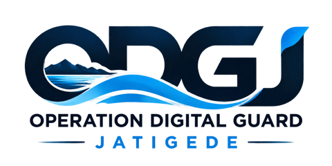

Tolls ODGJ
AWLR + Pola Operasi · 1 jam ke depan
Akun pribadi
Perkiraan TMA +1 jam
Upload Excel Rerata Tinggi Muka Air. Forecast menggunakan perubahan TMA aktual dari hari-hari sebelumnya; pola tahunan tidak digunakan. Debit operasi hanya sinyal pendukung arah prediksi.
Pola Operasi Bendungan · 24 Jam WIB
Atur Base / Peak, PWW, irigasi, dan outflow nominal per jam. Inflow = PWW + irigasi (m³/s). Angka contoh awal belum berlaku sampai Anda klik Simpan pola operasi. Setelah tersimpan, setiap perubahan akan disimpan otomatis ke akun Supabase.
Memuat pengaturan pola operasi...
| Jam | Status | PWW | Irigasi | Outflow | Inflow | Netto |
|---|
Outflow nominal diseleksi dalam rentang ±2 m³/s berdasarkan kecocokan arah terhadap AWLR historis. Koreksi outflow adalah estimasi model, bukan debit terukur. Transisi Base/Peak diratakan selama 15–20 menit, mulai 5 menit sebelum pergantian jam.
Riwayat per tanggal (24 jam)
Belum ada riwayat pengecekan di akun ini.